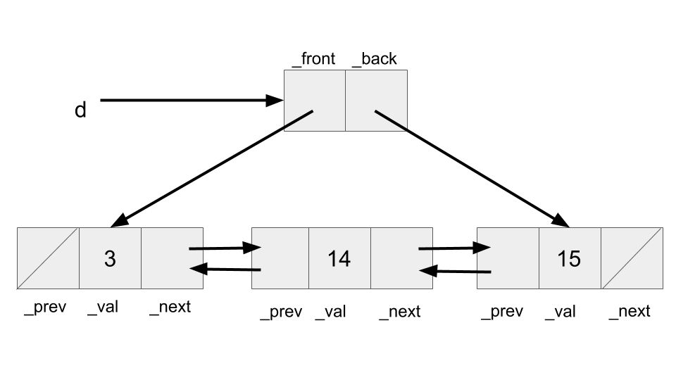
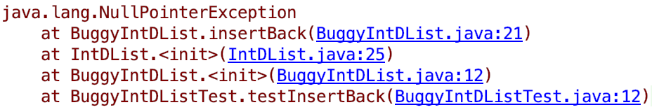
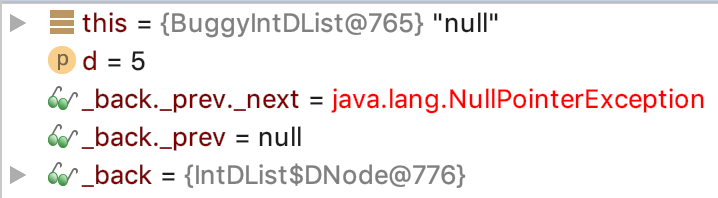

Navigation
A. Preliminaries
As usual, you can retrieve the files for this lab (after first using git status, git commit, and git push to make sure you have cleaned up, committed, and pushed everything that needs it) with
$ git fetch shared
$ git merge shared/lab3 -m "Start lab3"
$ git pushThis will add shared/lab3 to your current branch (in this case, master). When opening the project in IntelliJ, remember to add the libraries through File -> Project Structure -> Libraries -> +, then select the lib folder in cs61b-software.
When you are ready to submit your work, commit and push everything, and then use
$ git tag lab3-1 # Or whatever sequence number you get to
$ git push
$ git push --tagsIf you want to download lab3 in another local repository (e.g., you started on the instructional machines and now want to work entirely on your own laptop) then go into this other repository (presumably cloned from your central cs61b repository) and (after committing and pushing anything you already have there) run
$ git pullB. IntDLists Overview
In class, you've seen what is called a singly linked list,
IntList. The term singly linked refers to the single pointer (or link),
.tail, used to traverse the elements of the list. For this
problem, we'll define a new data structure, the IntDList, which uses a
doubly linked list.
The IntDList class uses another internal data structure, called a
DNode, to actually house its data. Read through IntDList.java to see why
we refer to this as an internal data structure!!! Each DNode has two pointers, _prev and _next. _prev points to the previous DNode in the chain, and _next points to the next DNode in the sequence. Each Dnode also stores a value, called _val.
Note that the IntDList itself contains two pointers, _front and _back. _front points to the first DNode in the chain and _back points to to the last. For example, if d were an IntDList, this is how we could represent the sequence [3, 14, 15]:

Note that the pointers in this diagram point to the entire boxes they are directed towards, not just the smaller boxes within. Thus, _front points to a DNode whose _prev is null, _val is 3, and _next points to a DNode whose _val is 14. If we wanted to get 14, we could say either _front._next._val or _back._prev._val.
Self Test - To help ourselves work with IntDLists, answer the following question: What are the data types for _front, _back, _prev, _next, and _val? Hint: 4 of them share the same type.
Answer - _front, _back, _prev, and _next have type DNode, and _val has type int.
As you can see, unlike IntList, there's an extra level of
indirection at work here. The user (or client) of IntDList
doesn't see the actual DNodes that hold the data. This has various
advantages. One of them is that the client can now do operations that modify
the list without having to return and reassign its value (that is, we
can use void methods to insert and delete things). That's because
we never change the pointer to the IntDList itself; we only modify
its fields. Another is that we can change our implementation of our IntDList without requiring that anyone change the way they use our IntDList class.
Reflecting on our current design, is there anything that can be simplified? It seems like our IntDList stores a pointer to a "next" node (_front) and a pointer to a "previous" node (_back). Could we instead have our IntDList only store a pointer to a special DNode, whose _next points to whichever _front would've pointed to and whose _prev points to whichever _back would've pointed to? This is called a sentinel node. The doubly linked list with a sentinel node is typically used in practice as the linked list representation, like in Java's own standard library class, java.util.LinkedList. While you won't be implementing this exact design today, it's good practice to reflect on the pros and cons of our current design, and the implications on performance and development.
C. Debugging
We're going to go through a short debugging exercise to help you write some of the methods in IntDList.java.
There are 4 files involved here.
BuggyIntDList.java, which contains a buggyinsertBackmethod. This should not be modifiedBuggyIntDListTest.java, which contains a test for this buggy method that should help you fix it.BuggyIntDListSolution.java, which is a duplicate ofBuggyIntDList.javawith a few extra methods you will implement. However, you should only be editingBuggyIntDListSolution.java.BuggyIntDListSolutionTest.java, which will test the method you are actively fixing .
In addition to fixing the bug, fill in the methods getException, getErrorFunction, and getErrorLineNumber in BuggyIntDListSolution.java after running the debugger and reading its output. You should modify the contents of these functions to return a string of the corresponding part of the stack trace (e.g. for getException, you should return the string "SomethingException"). DO NOT MAKE ANY CHANGES TO BuggyIntDList.java.
Self Test - Which file(s) contains the error, and which file should you be editing?
Answer - Both BuggyIntDList.java and BuggyIntDListSolution.java contain an erroneous insertBack method, but I should only be editing BuggyIntDListSolution.java.
You should see the following when you run BuggyIntDListTest.java:

There are a few important things to note here. First, we can read the type of exception that was thrown - NullPointerException. To read the Oracle docs on what a NullPointerException is, take a look here. To summarize what they say, a NullPointerException is thrown when null is used where an object is required (for example, trying to call an instance method of a null object, or accessing or modifying the instance variables of a null object).
Self Test - If we have a box and pointer diagram as we did above, would executing _front._prev._val cause a NullPointerException?
The diagram is displayed again here for your convenience:
Answer - Yes. _front._prev is null, and trying to access an instance variable of a null object causes a NullPointerException.
Next, we can see the stack trace. This is a listing of all functions that were called before the exception was thrown. The stack trace can be read chronologically from bottom to top - that is, first the method testInsertBack was called, and then the constructor for BuggyIntDList was called, then the constructor for IntDList, and then the method insertBack was called. Since insertBack is at the top of our stack trace, we know that it was the function in which the exception was thrown. The stack trace also provides us the exact line numbers where functions are called.
We can see that the last function call before the NullPointerException was made at line 21 of BuggyIntDList.java.
If you'd like, take a look at this Stack Overflow Post on what a stack trace is.
Use the stack trace, along with the skeleton code provided to you to fix the insertBack method in BuggyIntDListSolution.java. Again, DO NOT MAKE ANY CHANGES TO BuggyIntDList.java. Once you understand what a NullPointerException is, the next question is why would this occur? To answer this, use the IntelliJ Debugger and set a break point at the line 21 in BuggyIntDList.java. If you'd like to review using the IntelliJ Debugger, take a look at lab2.
After putting this breakpoint and running the debugger, you should see this in your IntelliJ window:

Now that we know the error, and the line the error occurs on, we need to reflect on what could be causing this error. Are we trying to access an instance variable of a null object?
Now that we understand what the error is, and why the error occurred, we can start to think about fixing it. Try drawing a box and pointer diagram, or using the Java Visualizer (see lab2 for more information on how to use it). When does this error occur, and what would be the simplest fix?
Remember to make all changes to BuggyIntDListSolution.java.
Note: the tests in BuggyIntDListSolutionTest.java are not rigorous, so do not take passing them as a guarantee that your insertBack is bug free.
To check that your insertBack implementation is correct, complete the following tasks:
- Draw a box and pointer diagram (or use the visualizer) to see what your code is doing, and verify you are assigning all pointers correctly.
- Write your own comprehensive tests in
BuggyIntDListSolutionTest.javato verify the functionality of your code.
D. IntDLists Practice
Among the skeleton files, you'll find IntDList.java. Fill in the methods insertBack, get, size, insertFront, deleteBack, and toString. While we haven't explicitly talked about String very much, treat this as an exercise in asking your peers, academic interns, TAs, or the internet for advice. Note that the IntDList constructor calls insertBack, so you will need to implement insertBack before
running any unit tests in the IntDListTest class. However, your insertBack should already be done from part C.
E. Submissions
You will be turning in BuggyIntDListSolution.java and IntDList.java.
You should've filled out the following methods in BuggyIntDListSolution.java:
insertBackgetExceptiongetErrorFunctiongetErrorLineNumber
You should've filled out the following methods in IntDList.java:
insertBackgetsizeinsertFrontdeleteBacktoString
As usual, add your files, commit, and tag the commit. Push your commits to your central repository, then push your tags by running
git push --tags